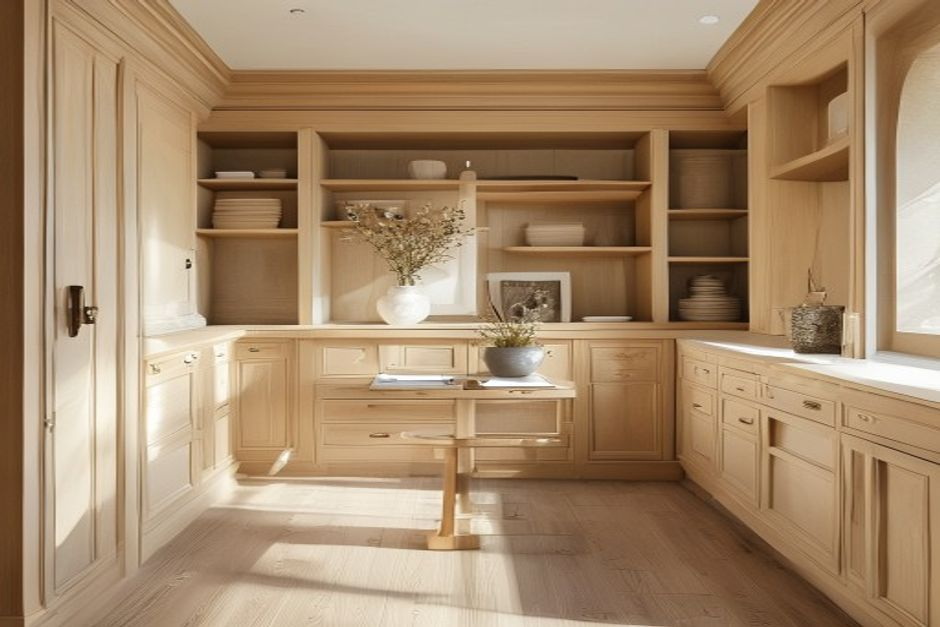
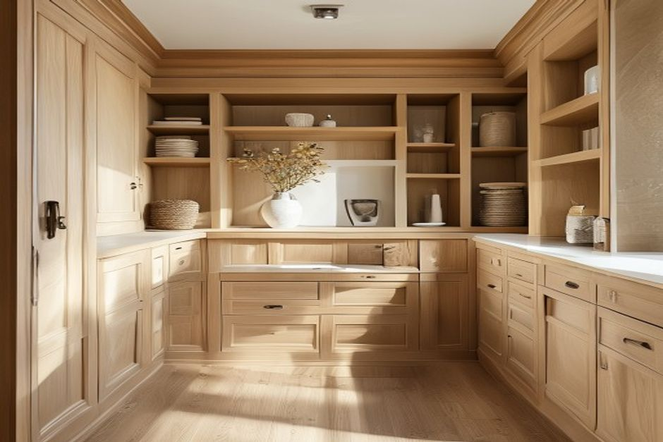

JOINERY
Fitted storage
Alcoves, wardrobes and cabinetry can begin with a clear brief.
Explore the categoryCARPENTERS · PENGE · PRIVATE REVIEW
A premium, practical digital concept for Test02 Prospect LTD: clear enquiry paths, a material explorer and direct contact details—without unverified claims about work, people, prices or availability.
Confirmed details: carpenters · Penge · 02086595010

START WITH THE RIGHT CATEGORY
Each route is a conversation starter, not a promise of scope or availability.
JOINERY
Alcoves, wardrobes and cabinetry can begin with a clear brief.
Explore the category
TIMBERWORK
Discuss repairs, replacement or a new timber feature directly.
Explore the category
FINISH
Material and finish choices can be explored before a site visit.
Explore the categorySIGNATURE TOOL · MATERIAL / FINISH EXPLORER
Use these illustrative directions to put a finish preference into words. Material, suitability and final specification should be confirmed directly.
WARM OAK
An illustrative starting point for a conversation about visible grain and a warm timber character.
ILLUSTRATIVE PROCESS
Photos, rough dimensions, the room or exterior area, access information and any deadline help frame an initial conversation. A written quote follows only when the business can assess the requested work.
See the enquiry pathILLUSTRATIVE REFERENCE SET

ALL IMAGERY ON THIS PREVIEW IS ILLUSTRATIVE CARPENTRY DIRECTION — NOT VERIFIED WORK BY TEST02 PROSPECT LTD.
A SIMPLE NEXT STEP
Request a site visit or contact Test02 Prospect LTD directly. The preview form is intentionally non-sending.